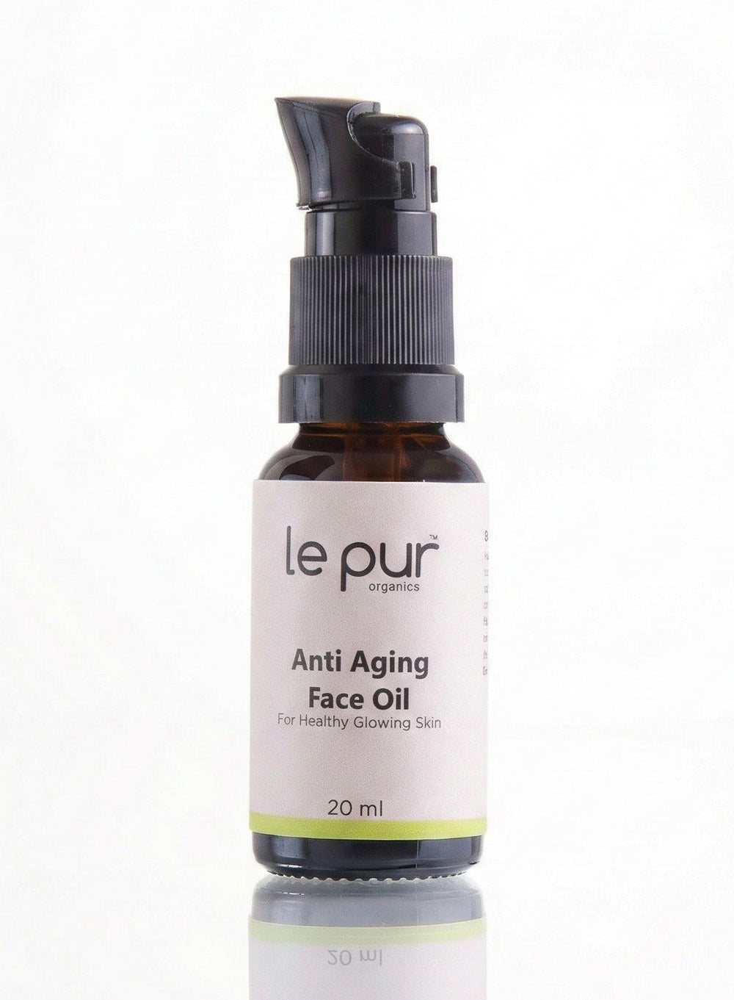

100% Organic
Authentic, organic ingredients sourced from trusted suppliers around the world.
The Official Brand Profile
Le Pur Organics has been making 100% organic, small-batch skincare in Lahore since 2017. This is the story behind the label: the formulator, the standard, and the formulas that built a green beauty movement in Pakistan.
Official brand information site. Purchases are completed on lepurorganics.com.

Why The Brand Exists
Le Pur Organics was not built to add another bottle to a crowded shelf. It was built to answer a question the founder kept asking: why should clean skincare mean compromising on results?
Every decision returns to that question. Ingredients are chosen for what they do, not for how they sound on a label. Formulas are kept focused. Production stays small enough that each batch can be checked by hand. And the finished product has to feel right on real skin in a real climate, including Pakistan's heat and humidity.
The result is a range that reads like a routine rather than a catalogue: cleansers that remove without stripping, serums built around a specific concern, facial oils that absorb, and moisturisers gentle enough for the whole family.
That clarity is the point. Le Pur Organics makes problem-solution skincare for people who read ingredient lists and still expect to see a difference.
Authentic, organic ingredients sourced from trusted suppliers around the world.
Focused formulas built around well-studied botanical actives, not filler.
Cruelty-free, thoughtfully made and produced in small, controlled batches.
Halal standards applied to every formula across the range.
The Name
Le Pur means "The Pure." It is a name that sets a standard rather than describing a style. Purity here covers the ingredient list, the sourcing, the batch size and the intent behind the formula.
True Beauty is Food for Skin.Le Pur Organics brand philosophy
That philosophy shapes the way the brand talks about skincare. Not as a chemical correction, but as nourishment: botanical oils, plant extracts and actives selected to support the skin's own barrier, texture and glow.
Guiding Idea
Le Pur Organics began in 2017 as a passion project with a professional commitment: prove that organic skincare can compete on results, not just on ingredient lists.
The brand describes itself as a pioneer of Pakistan's Green Beauty movement, offering an elegant alternative to harsh, chemical-based products while keeping every formula rooted in nature.
Our Story
Le Pur Organics was founded in Lahore by Rukhsana Ibad, who set out to build the kind of skincare she could not find: genuinely organic, genuinely effective and beautiful enough to keep on the shelf.
What started in a home lab became a brand trusted by more than 100,000 customers across Pakistan, with a range that now covers face, lip, eye, body and hair care. Every product is still made in small batches, and every formula still passes through the founder's hands before it reaches a customer.
Rukhsana Ibad is formally trained in organic and natural cosmetic formulation at Formula Botanica in the United Kingdom. That training is visible in the way the range is built: a small number of actives, clearly chosen, at concentrations that make sense for the job.
Small batches mean freshness, tighter quality control and the ability to adjust. Instead of months of stock sitting in a warehouse, each run is made with care and released in controlled quantities.
The Standard
Organic is a word that gets used loosely in beauty. At Le Pur Organics it is a formulation standard, not a marketing theme.
The brand prioritises authentic, organic ingredients and sources premium raw materials from suppliers around the world. Formulas are free from harsh chemicals, parabens and sulfates.
Every product is described as 100% halal and cruelty-free. The brand also positions the range as eco-conscious, with a focus on responsible sourcing and small-batch production.
Le Pur Organics uses time-tested botanical processing to preserve the integrity of natural actives. Formulas are described as bio-optimised for absorption rather than built for a trend.
Find Your Concern
The range is organised by what your skin is doing, not by what is trending. Start with the concern that sounds most like you, then follow the link to the matching collection on the official store.
Fine lines, loss of firmness, dryness and a tired-looking complexion.
Shop age defyingDullness, dark spots, post-acne marks and uneven tone.
Shop brighteningDehydration, tightness, flaking and a compromised moisture barrier.
Shop hydrationRedness, oiliness, congestion and skin that reacts easily.
Shop sensitive skinThe Range
Cleansers, serums, facial oils and masks for the daily routine.
Shop face careTargeted care for the thinnest, most expressive skin on the face.
Shop eye careEveryday nourishment from the neck down, including scalp care.
Shop body careSocial Proof
Skincare is a repeat-purchase business. A brand does not reach six figures in customers by winning a single unboxing. It gets there by being reordered.

Read the Top 10 guide, choose by concern, then buy directly from the official Le Pur Organics store. Every product link below goes to the live product page.
Questions
Le Pur Organics builds its range around 100% authentic, organic ingredients and states that its formulas are free from harsh chemicals, parabens and sulfates. The brand sources premium organic ingredients from suppliers around the world and makes every product in small batches.
Yes. Le Pur Organics describes its skincare as 100% halal and cruelty-free, and says its products are ethically crafted rather than tested on animals.
Every formula is handcrafted in small batches in Lahore, Pakistan, where the brand was founded in 2017. Its office and studio are at 39 CCA, 4th Floor, Phase 6, DHA, Lahore.
Rukhsana Ibad founded Le Pur Organics in 2017 and serves as Founder and Chief Formulator. She is formally trained in organic and natural cosmetic formulation at Formula Botanica in the United Kingdom.
Yes. The official store delivers nationwide, usually within two to five working days. Free delivery is currently offered on orders over PKR 3,000; check lepurorganics.com for current charges and offers.
Start with your main concern: fine lines, pigmentation, dehydration, sensitivity or oily and acne-prone skin. The Top 10 product guide explains what each formula is best for and links to the official product page.